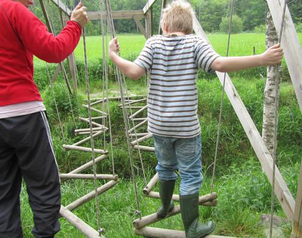
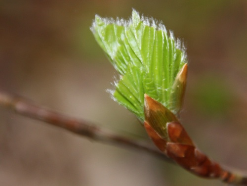

Bondegårdsferie, aktivitetsferie, også for aleneforeldre med barn
Aarholt-tunet Gjestegård, Stokke i Vestfold, begynte med bondegårdsferie i 1992. Familiene har selvhushold i de koselige leilighetene, og Aarholt-tunet har program hver eneste dag opptil 5-6 timer, ved sine aktivitetsledere. Barna finner straks noen på egen alder å bli kjent med og leke med, da det er opptil 14 familier på stedet samtidig. En bondegårdsferieuke går fra søndag til fredag gjennom hele juli.
Man betaler for boenheten, og ikke pr. deltaker. Slik kan man ta med så mange nevøer og nieser, eller besteforeldre som leiligheten er beregnet for. Ønsker man større plass, oppgraderer man.
Du kan lese mer om bondegårdsferieukene på Aarholt-tunet ved å klikke i venstremenyen på "om bondegårdsferie".
Aarholt-tunet Gjestegård, i Vestfold, har hatt bondegårdsferie i samarbeid med "Unnis aktivitesferie for aleneforeldre med barn" i ca 20 år.
Hun har egne feriereiser for aleneforeldre med barn, og kan kontaktes på:
”Unnis aktivitetsferie for aleneforeldre med barn”
Unni Belseth, Hans Hansensvei 170, 3022 Drammen
tlf. 32 82 65 04, mobil: 92 81 26 19, fax 32 82 08 75



{kind=link}